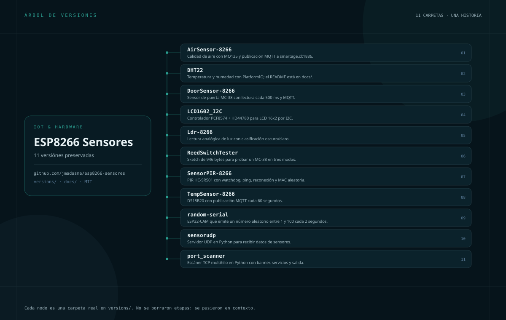

AirSensor-8266
3 archivosCalidad de aire con MQ135 y publicación MQTT a smartage.cl:1886.
🔒 privadaSensores, actuadores y utilidades ESP8266: del DHT22 al escáner TCP, todos con código mínimo y verificable.

Once proyectos pequeños de ESP8266 y utilidades: calidad de aire, temperatura, puertas, luz, PIR, LCD, reed switch, serial aleatorio, servidor UDP y escáner de puertos.
Los sensores baratos se conectan fácil, pero fallan en silencio: se cae el WiFi, el watchdog no existe y el dato viejo parece actual.
Cada sketch resuelve una cosa y la documenta: reconexión, intervalo, tópico y diagnóstico. Los que no tienen README se conservan con su código.
Recorrido por SensorPIR-8266: un NodeMCU que detecta movimiento, lo publica por MQTT y sobrevive a cortes de WiFi, broker caído y fallos silenciosos.
Recorrido por SensorPIR-8266: un NodeMCU que detecta movimiento, lo publica por MQTT y sobrevive a cortes de WiFi, broker caído y fallos silenciosos.
Fragmentos literales de versions/SensorPIR-8266/SensorPIR-8266.ino. El archivo secrets.h con las credenciales WiFi y MQTT no está en el repositorio: hay que crearlo para compilar.
Cada carpeta conserva una etapa del proyecto. No se borraron las anteriores: se pusieron en contexto.
Calidad de aire con MQ135 y publicación MQTT a smartage.cl:1886.
🔒 privadaTemperatura y humedad con PlatformIO; el README está en docs/.
🔒 privadaSensor de puerta MC-38 con lectura cada 500 ms y MQTT.
🔒 privadaControlador PCF8574 + HD44780 para LCD 16x2 por I2C.
🔒 privadaLectura analógica de luz con clasificación oscuro/claro.
🔒 privadaSketch de 946 bytes para probar un MC-38 en tres modos.
🔒 privadaPIR HC-SR501 con watchdog, ping, reconexión y MAC aleatoria.
Ver carpetaDS18B20 con publicación MQTT cada 60 segundos.
🔒 privadaESP32-CAM que emite un número aleatorio entre 1 y 100 cada 2 segundos.
🔒 privadaServidor UDP en Python para recibir datos de sensores.
🔒 privadaEscáner TCP multihilo en Python con banner, servicios y salida.
🔒 privadaesp8266-sensores reúne once sketches y utilidades para ESP8266, desde un PIR o un DS18B20 hasta un LCD I2C, un escáner de puertos y un servidor UDP. Cada pieza resuelve un problema acotado y documenta, cuando corresponde, el intervalo de publicación, el tópico MQTT, la reconexión y el diagnóstico.
Está pensado para quien arma sensorización de bajo costo y necesita patrones que sobrevivan a la WiFi doméstica: watchdog, ping de control, MAC aleatoria tras fallos y heartbeat. Importa porque muestra el oficio detrás de un nodo: no alcanza con leer el sensor, hay que detectar cuándo el dato dejó de ser confiable. La documentación es desigual, y el conjunto se presenta como catálogo, no como plataforma.
El README original de la versión de referencia, completo.
Firmware para NodeMCU ESP8266 que detecta movimiento mediante un sensor PIR HC-SR501 y publica alertas en tiempo real via MQTT al broker www.smartage.cl:1886. Basado en la arquitectura resiliente lp101_secure con watchdog por software, ping check, reconexion automatica WiFi/MQTT y aleatorizacion de MAC ante fallos.
La conexion WiFi es directa mediante WiFi.begin() con credenciales definidas en secrets.h.
SensorPIR-8266 es un dispositivo IoT autonomo que monitoriza movimiento en un espacio fisico. Al detectar movimiento, publica inmediatamente una alerta MQTT; al cesar el movimiento, publica un mensaje de estado false. Ademas, envia un heartbeat periodico cada 30 segundos para que el sistema central sepa que sigue operativo.
El firmware hereda la arquitectura de lp101_secure, garantizando alta disponibilidad mediante:
WiFi.begin() (credenciales en secrets.h)directive/powerState)| Parametro | Valor |
|---|---|
| Placa | NodeMCU ESP8266 (ESP-12E / LoLin V3) |
| Microcontrolador | Tensilica L106 32-bit RISC |
| Frecuencia | 80 MHz |
| Flash | 4 MB |
| RAM disponible | ~80 KB (heap para usuario) |
| Voltaje logico | 3.3V (pines GPIO) |
| Alimentacion | 5V via USB (cable micro-USB estandar) |
| Conectividad | WiFi 802.11 b/g/n 2.4 GHz integrada |
| Conexion WiFi | Directa via WiFi.begin() |
| FQBN | esp8266:esp8266:nodemcuv2 |
| Sensor | PIR HC-SR501 (infrarrojo pasivo) |
| Protocolo | MQTT v3.1.1 |
| Broker | www.smartage.cl:1886 |
| Device ID | 6a7357a00221f201ddcc5f1d |
| WiFi SSID | Nv2 |
| Usuario MQTT | luisHernandez |
El HC-SR501 es un sensor infrarrojo pasivo (PIR) que detecta cambios en la radiacion infrarroja dentro de su campo de vision. Su funcionamiento se basa en:
Lente de Fresnel: concentra la radiacion IR del entorno sobre el sensor piroelectrico, dividiendo el area de cobertura en zonas (calientes y frias). Tiene un angulo de deteccion de aproximadamente 110deg y un alcance de 3 a 7 metros.
Sensor piroelectrico: contiene dos elementos sensibles conectados en oposicion. Cuando una persona (fuente de calor en movimiento) cruza de una zona a otra, la diferencia de radiacion entre los dos elementos genera un pulso de voltaje.
Chip controlador BISS0001: amplifica y procesa la senal del sensor piroelectrico. En modo H (repetible), la salida se mantiene en HIGH mientras el movimiento continue. Este modo es esencial para que el firmware pueda detectar correctamente el cese de movimiento.
Salida digital TTL (pin OUT): - HIGH (3.3V): movimiento detectado - LOW (0V): sin movimiento
El jumper amarillo del HC-SR501 debe estar en la posicion H (repetible/retriggerable). En modo L (no repetible), la salida solo emite un pulso unico y no permite al firmware detectar correctamente el cese de movimiento.
┌─────────────────────┐
│ HC-SR501 │
│ │
│ ┌───┐ ┌───────┐ │
│ │H L│ │ o o │ │ <- potenciometros
│ └─┬─┘ │Delay │ │ (delay time, sensibilidad)
│ │ │Sensib │ │
│ └──────└───┬───┘ │
│ Jumper en H │ │
└───────────────┴──────┘
El firmware utiliza deteccion de flancos simple (edge detection) con un intervalo minimo entre reportes de 200 ms (SENSOR_REPORT_MS):
report/detectionState = true.report/detectionState = false.El HC-SR501 requiere aproximadamente 60 segundos tras el encendido para estabilizar su circuito interno. El firmware espera 65 segundos antes de comenzar a procesar lecturas, ignorando cualquier fluctuacion durante este periodo.
| Pin NodeMCU | GPIO | Modo | Componente Conectado | Notas |
|---|---|---|---|---|
| D2 | GPIO4 | INPUT |
PIR HC-SR501 -- pin OUT | Senal TTL 3.3V: HIGH = movimiento, LOW = sin movimiento. No requiere resistencia pull-down externa (el sensor entrega 0V en reposo). |
| D4 | GPIO2 | OUTPUT |
LED_BUILTIN (LED azul en placa) | Indicador de estado del sistema. Logica invertida: LOW = encendido, HIGH = apagado. NUNCA indica movimiento (solo estado WiFi/MQTT). Debe permanecer HIGH durante el boot. |
| VU / Vin | -- | PWR (5V) | PIR HC-SR501 -- pin VCC | 5V desde el puerto USB. El HC-SR501 opera entre 4.5V y 20V, asi que 5V es el voltaje ideal. No conectar a pin de 3.3V (el sensor requiere minimo 4.5V). |
| GND | -- | GND | PIR HC-SR501 -- pin GND | Tierra comun. Cualquier pin GND de la NodeMCU sirve. |
| TX (GPIO1) | GPIO1 | UART TX | USB-Serial integrado | Reservado para comunicacion Serial (115200 baud). No conectar nada en este pin. |
| RX (GPIO3) | GPIO3 | UART RX | USB-Serial integrado | Reservado para comunicacion Serial (115200 baud). No conectar nada en este pin. |
| Pin | GPIO | Motivo |
|---|---|---|
| D3 | GPIO0 | Debe estar HIGH durante el boot para modo normal. El NodeMCU tiene pull-up interno. |
| D8 | GPIO15 | Debe estar LOW durante el boot. El NodeMCU tiene pull-down interno. |
| D0 | GPIO16 | Solo usable para wake-up desde deep sleep. No utilizado en este proyecto. |
NodeMCU ESP8266 HC-SR501 PIR Sensor
┌──────────────────┐ ┌─────────────────────┐
│ │ │ │
│ VU (5V) ───────┼──────────────┼── VCC (5V) │
│ │ │ │
│ GND ───────┼──────────────┼── GND │
│ │ │ │
│ D2 (GPIO4) ─────┼──────────────┼── OUT (senal) │
│ │ │ │
│ D4 (GPIO2) │ (LED azul integrado en placa) │
│ │ │ │
│ micro-USB ───────┼── Alimentacion 5V y Serial │
│ │ │ │
└──────────────────┘ └─────────────────────┘
┌────────────────────────────────────────────────────────┐
│ │
│ NodeMCU ESP8266 │
│ ┌──────────────────────────────┐ │
│ │ D0 D1 D2 D3 D4 3V3 GND│ │
│ │ ██ ██ ██ ██ ██ ██ ██ │ │
│ │ ┌┤ │ │ │
│ │ ││ └────────────────┼───┐ │
│ │ ││ │ │ │
│ │ ││ D5 D6 D7 D8 RX TX│ │ │
│ │ ││ ██ ██ ██ ██ ██ ██│ │ │
│ │ VU───┘│ │ │ │
│ │ GND───┘ │ │ │
│ └──────────────────────────────┘ │ │
│ │ │
│ ┌────────────────────┐ │ │
│ │ HC-SR501 PIR │ │ │
│ │ │ │ │
│ │ VCC o─────────────┼───────┘ (5V) │
│ │ OUT o─────────────┼─── D2 (GPIO4) │
│ │ GND o─────────────┼─── GND │
│ │ │ │
│ │ ╔═══╗ │ │
│ │ ║H L║ <- modo H │ │
│ │ ╚═╤═╝ │ │
│ │ jumper │ │
│ └────────────────────┘ │
│ │
│ Cable USB --- PC / cargador 5V │
└────────────────────────────────────────────────────────┘
| Potenciometro | Ajuste recomendado | Razon |
|---|---|---|
| Delay time (izquierdo) | Minimo (giro antihorario completo) | Para que el cese de movimiento se detecte con precision inmediata |
| Sensibilidad (derecho) | Maximo (giro horario completo) | Maximo alcance de deteccion (~7m) |
| Posicion | Modo | Uso en este proyecto |
|---|---|---|
| H | Repetible (retriggerable) | Usar esta. La salida se mantiene HIGH mientras haya movimiento continuo |
| L | No repetible | No usar. Produce un solo pulso y no permite detectar correctamente el cese |
| Cantidad | Componente | Descripcion |
|---|---|---|
| 1 | NodeMCU ESP8266 (ESP-12E) | Placa de desarrollo con WiFi |
| 1 | Sensor PIR HC-SR501 | Sensor de movimiento infrarrojo pasivo |
| 3 | Cables jumper hembra-hembra | Para conectar VCC, GND y OUT del PIR a la NodeMCU |
| 1 | Cable micro-USB | Para alimentacion y programacion |
No se requieren resistencias ni componentes adicionales. La NodeMCU alimenta directamente al PIR desde el pin VU (5V del USB).
Conectar el hardware segun el diagrama de conexion mostrado arriba. Verificar: - PIR VCC → NodeMCU VU (5V) - PIR OUT → NodeMCU D2 (GPIO4) - PIR GND → NodeMCU GND - Jumper del PIR en posicion H - Potenciometro de delay al minimo (antihorario) - Potenciometro de sensibilidad al maximo (horario)
Configurar credenciales en secrets.h antes de compilar:
- WiFi: SSID Nv2, password 12345678
- MQTT: broker www.smartage.cl:1886, usuario luisHernandez / luis123
- Device ID: 6a7357a00221f201ddcc5f1d
Compilar y cargar el firmware (ver seccion Compilacion y Carga).
Abrir el Monitor Serial a 115200 baud para ver los mensajes de diagnostico.
Esperar ~65 segundos mientras el PIR se inicializa. En el Serial veras:
SensorPIR-8266 booted
PIR: D2/GPIO4 | MQTT: report/detectionState, report/powerState
Warmup: 65s...
Connecting to Nv2
................
Connected: Nv2
IP: 192.168.1.100
Connecting to MQTT...
connected
PIR ready
Mover la mano frente al sensor -- deberias ver >>> MOTION DETECTED <<< y recibir el mensaje MQTT report/detectionState: true.
Dejar de mover -- veras --- motion cleared --- y el mensaje report/detectionState: false.
Una vez inicializado, el dispositivo funciona de forma autonoma:
report/online con valor true.El sensor puede encenderse o apagarse remotamente mediante comandos MQTT:
ON al topic 6a7357a00221f201ddcc5f1d/directive/powerState para activar el sensor.OFF al topic 6a7357a00221f201ddcc5f1d/directive/powerState para desactivar el sensor (deja de reportar detecciones).Cuando el sensor se desactiva, el firmware responde publicando report/powerState: OFF. Al reactivarse, publica report/powerState: ON.
/dev/ttyUSB0 en Linux, COM3 en Windows)secrets.h# Instalar arduino-cli si no esta instalado
curl -fsSL https://raw.githubusercontent.com/arduino/arduino-cli/master/install.sh | sh
# Mover al PATH si es necesario
sudo mv bin/arduino-cli /usr/local/bin/
# Anadir el indice de placas ESP8266
arduino-cli config add board_manager.additional_urls https://arduino.esp8266.com/stable/package_esp8266com_index.json
# Actualizar el indice
arduino-cli core update-index
# Instalar el core ESP8266
arduino-cli core install esp8266:esp8266
# PubSubClient (cliente MQTT) - unica libreria externa requerida
arduino-cli lib install "PubSubClient"
Todas las demas librerias (ESP8266WiFi, Ticker, Arduino.h, user_interface.h) son built-in del core ESP8266.
# Desde el directorio del proyecto
cd /home/jma/Documents/Proyects/OpenCode/AG.CreadorContenido/proyectos/SensorPIR-8266
arduino-cli compile --fqbn esp8266:esp8266:nodemcuv2 .
# Ajusta el puerto segun tu sistema
arduino-cli upload -p /dev/ttyUSB0 --fqbn esp8266:esp8266:nodemcuv2 .
En Windows: -p COM3 (o el puerto que corresponda).
arduino-cli monitor -p /dev/ttyUSB0 -c baudrate=115200
arduino-cli compile --fqbn esp8266:esp8266:nodemcuv2 . && \
arduino-cli upload -p /dev/ttyUSB0 --fqbn esp8266:esp8266:nodemcuv2 . && \
arduino-cli monitor -p /dev/ttyUSB0 -c baudrate=115200
| Topic | Payload | Frecuencia | Descripcion |
|---|---|---|---|
<DEVICE_ID>/report/online |
true |
Cada 30s | Heartbeat: confirma que el dispositivo esta vivo y conectado |
<DEVICE_ID>/report/detectionState |
true |
Al detectar movimiento | Alerta de movimiento detectado (flanco LOW->HIGH del PIR) |
<DEVICE_ID>/report/detectionState |
false |
Al cesar movimiento | Movimiento finalizado (flanco HIGH->LOW del PIR) |
<DEVICE_ID>/report/powerState |
ON |
Al activarse el sensor | Sensor habilitado para detectar movimiento |
<DEVICE_ID>/report/powerState |
OFF |
Al desactivarse el sensor | Sensor deshabilitado (no reporta detecciones) |
Donde <DEVICE_ID> es 6a7357a00221f201ddcc5f1d (configurable en secrets.h via MQTT_CLIENT).
Para evitar saturar el broker, el firmware impone un intervalo minimo de 200 ms entre reportes consecutivos de deteccion (SENSOR_REPORT_MS). Si el PIR oscila mas rapido que este intervalo, los reportes intermedios se descartan.
| Topic | Payload | Efecto |
|---|---|---|
<DEVICE_ID>/directive/powerState |
ON |
Activa el sensor PIR. Comienza a reportar detecciones. Confirma publicando report/powerState: ON. |
<DEVICE_ID>/directive/powerState |
OFF |
Desactiva el sensor PIR. Deja de reportar detecciones. Confirma publicando report/powerState: OFF. |
<DEVICE_ID>/# |
cualquier | El dispositivo se suscribe a todos los topics bajo su ID para futuras extensiones. Los mensajes recibidos se procesan segun el tipo de comando. |
# Activar sensor
mosquitto_pub -h www.smartage.cl -p 1886 \
-u luisHernandez -P luis123 \
-t "6a7357a00221f201ddcc5f1d/directive/powerState" \
-m "ON"
# Desactivar sensor
mosquitto_pub -h www.smartage.cl -p 1886 \
-u luisHernandez -P luis123 \
-t "6a7357a00221f201ddcc5f1d/directive/powerState" \
-m "OFF"
Respuesta esperada en el Monitor Serial:
Sensor ON
o
Sensor OFF
El LED_BUILTIN (GPIO2, D4) es el LED azul integrado en la placa NodeMCU. No indica movimiento; solo refleja el estado de conectividad del sistema:
| Comportamiento del LED | Significado |
|---|---|
| Parpadeo rapido (100ms ON/OFF) | Conectando a WiFi |
| Parpadeo medio (500ms ON/OFF) | WiFi conectado, reconectando MQTT |
| Parpadeo lento (pulso cada 20s) | Sistema OK: WiFi + MQTT conectados |
| Apagado (HIGH, logica invertida) | Estado normal entre pulsos de heartbeat |
| 3 destellos rapidos (50ms) | Mensaje MQTT recibido |
El firmware implementa multiples capas de tolerancia a fallos, heredadas de la arquitectura lp101_secure:
Un Ticker interno se reinicia en cada iteracion del loop(). Si el loop se bloquea por 180 segundos, el watchdog fuerza ESP.restart().
Cada 30 segundos, el dispositivo intenta una conexion TCP a 8.8.8.8:53 (DNS de Google). Si falla 20 veces consecutivas (equivalente a 10 minutos sin internet), se reinicia la placa.
Si WiFi.status() indica desconexion en cualquier momento, se reinicia el proceso de conexion con WiFi.begin() usando las credenciales de secrets.h. Tras 40 reintentos fallidos, se aleatoriza la MAC y se reinicia.
Si el cliente MQTT se desconecta, se reintenta la conexion cada 10 segundos con un timeout total de 2 minutos. Si no se logra conectar en ese tiempo, se reinicia con nueva MAC.
Ante fallos persistentes (40 reintentos WiFi o 10 fallos consecutivos de publicacion MQTT), el firmware:
magic = 0xDEAD, failureFlag = 1).ESP.restart().# Suscribirse a todos los topics del dispositivo
mosquitto_sub -h www.smartage.cl -p 1886 \
-u luisHernandez -P luis123 \
-t "6a7357a00221f201ddcc5f1d/#" -v
Salida esperada al detectar movimiento:
6a7357a00221f201ddcc5f1d/report/online true
6a7357a00221f201ddcc5f1d/report/powerState ON
6a7357a00221f201ddcc5f1d/report/detectionState true
6a7357a00221f201ddcc5f1d/report/detectionState false
SensorPIR-8266 booted
PIR: D2/GPIO4 | MQTT: report/detectionState, report/powerState
Warmup: 65s...
Connecting to Nv2
................
Connected: Nv2
IP: 192.168.1.100
Connecting to MQTT...
connected
PIR ready
>>> MOTION DETECTED <<<
--- motion cleared ---
# configuration.yaml
mqtt:
binary_sensor:
- name: "Sensor de Movimiento Sala"
state_topic: "6a7357a00221f201ddcc5f1d/report/detectionState"
payload_on: "true"
payload_off: "false"
device_class: motion
availability_topic: "6a7357a00221f201ddcc5f1d/report/online"
payload_available: "true"
switch:
- name: "Sensor PIR Power"
state_topic: "6a7357a00221f201ddcc5f1d/report/powerState"
command_topic: "6a7357a00221f201ddcc5f1d/directive/powerState"
state_on: "ON"
state_off: "OFF"
payload_on: "ON"
payload_off: "OFF"
optimistic: false
import paho.mqtt.client as mqtt
import time
BROKER = "www.smartage.cl"
PORT = 1886
DEVICE_ID = "6a7357a00221f201ddcc5f1d"
def on_connect(client, userdata, flags, rc):
client.subscribe(f"{DEVICE_ID}/#")
print(f"Conectado. Suscrito a {DEVICE_ID}/#")
def on_message(client, userdata, msg):
topic = msg.topic
payload = msg.payload.decode()
if "report/detectionState" in topic:
if payload == "true":
print(f">>> MOVIMIENTO DETECTADO <<< [{time.ctime()}]")
else:
print(f"--- Movimiento finalizado --- [{time.ctime()}]")
elif "report/powerState" in topic:
print(f"Estado del sensor: {payload}")
elif "report/online" in topic:
print(".", end="", flush=True) # heartbeat silencioso
client = mqtt.Client()
client.username_pw_set("luisHernandez", "luis123")
client.on_connect = on_connect
client.on_message = on_message
client.connect(BROKER, PORT, 60)
client.loop_forever()
# En crontab:
# Desactivar sensor a las 23:00
0 23 * * * mosquitto_pub -h www.smartage.cl -p 1886 -u luisHernandez -P luis123 -t "6a7357a00221f201ddcc5f1d/directive/powerState" -m "OFF"
# Activar sensor a las 07:00
0 7 * * * mosquitto_pub -h www.smartage.cl -p 1886 -u luisHernandez -P luis123 -t "6a7357a00221f201ddcc5f1d/directive/powerState" -m "ON"
www.smartage.cl:1886 con usuario luisHernandez / luis123.6a7357a00221f201ddcc5f1d/#.El HC-SR501 tiene dos potenciometros ajustables mediante destornillador:
Controla cuanto tiempo permanece HIGH la salida tras detectar movimiento. Rango: ~5 segundos a ~300 segundos.
IMPORTANTE para este proyecto: El delay time del PIR debe estar al minimo (giro antihorario completo) para que el cese de movimiento se detecte con precision. Si el delay time es muy alto (>5s), el firmware reportara el cese con un retraso igual a ese valor.
Controla la distancia maxima de deteccion. Rango: ~3 metros a ~7 metros.
Recomendacion para este proyecto: al maximo (giro horario completo) para maxima cobertura.
detectionState: false aparece rapidamente (confirmando que el delay time esta al minimo).detectionState: false tarda mas de 5 segundos, reducir el delay time.| Advertencia | Detalle |
|---|---|
| NO alimentar el PIR con 3.3V | El HC-SR501 requiere minimo 4.5V. Alimentarlo con 3.3V causa funcionamiento erratico o fallo total. Usar siempre VU (5V). |
| NO conectar salida PIR directamente a 5V | Aunque el PIR se alimenta con 5V, su salida OUT es de 3.3V y es segura para los GPIO del ESP8266. |
| NO superar 500mA en VU | El pin VU entrega el voltaje del USB (5V). Un puerto USB estandar entrega 500mA. El PIR consume < 50uA en reposo. |
| Verificar polaridad | Una conexion invertida VCC/GND puede danar permanentemente el sensor PIR. |
| Pin GPIO | Precaución |
|---|---|
| GPIO0 (D3) | Debe estar HIGH durante el boot. El NodeMCU tiene pull-up interno, pero no conectes nada que fuerce LOW. |
| GPIO2 (D4) | Debe estar HIGH durante el boot. El LED_BUILTIN lo mantiene HIGH por defecto. |
| GPIO15 (D8) | Debe estar LOW durante el boot. El NodeMCU tiene pull-down interno. |
| GPIO1 (TX) y GPIO3 (RX) | Reservados para comunicacion Serial. No conectar sensores ni actuadores. |
| Advertencia | Detalle |
|---|---|
| Tiempo de warm-up | El PIR necesita ~60s para estabilizarse. El firmware espera 65s. Durante este periodo no se detecta movimiento. |
| Jumper del PIR en modo H | Debe estar en modo H (repetible) para que el cese de movimiento se detecte correctamente. En modo L la salida solo pulsa una vez. |
| Delay time del PIR | El potenciometro de delay time debe estar al minimo para deteccion precisa del cese de movimiento. |
| Device ID unico | Si se despliegan multiples dispositivos, cada uno debe tener un MQTT_CLIENT diferente para evitar colisiones en el broker. |
| Monitor Serial a 115200 | El baud rate debe ser exactamente 115200. Otros valores mostraran caracteres basura. |
| Alimentacion estable | Un cable USB de mala calidad o un puerto USB con ruido pueden causar reinicios aleatorios del ESP8266. |
| Alcance WiFi | El ESP8266 tiene antena integrada en PCB. En entornos con mucha interferencia o paredes gruesas, el alcance se reduce significativamente. |
| Temperatura ambiente | El PIR puede generar falsos positivos con cambios bruscos de temperatura ambiental (aire acondicionado, calefactores, corrientes de aire). |
| Mascotas | El PIR puede detectar mascotas dependiendo de su tamano y la sensibilidad configurada. |
// secrets.h contiene TODAS las credenciales:
// - WiFi: WIFI_SSID, WIFI_PASSWORD
// - MQTT: MQTT_BROKER, MQTT_PORT, MQTT_USERNAME, MQTT_PASSWORD, MQTT_CLIENT
// No versionar con valores reales en repositorios publicos.
SensorPIR-8266/
├── SensorPIR-8266.ino # Sketch principal: setup, loop, PIR, WiFi, MQTT, watchdog
├── secrets.h # Credenciales WiFi y MQTT
├── .gitignore # Exclusiones para build artifacts y archivos sensibles
├── PLAN.md # Plan de implementacion (referencia interna)
├── AUDIT_REPORT.md # Informe de auditoria de codigo (referencia interna)
├── README.md # Este documento
└── docs/
├── datasheet.md # Documentacion de usuario detallada
└── developer.md # Documentacion para desarrolladores
Este proyecto se distribuye como software libre. Consultar los terminos especificos con el autor del proyecto.
Documentacion generada el 2026-08-05. Version del firmware: basada en arquitectura lp101_secure.
Las primeras versiones existen para que estos errores no se repitan: cada una dejó una decisión de diseño verificable.
La lectura periódica del DS18B20 se lanzaba desde un Ticker, en contexto de interrupción. OneWire termina en delayMicroseconds() y el core llama a panic() cuando no puede suspender, con el mensaje core_esp8266_main.cpp:191. Se eliminó el Ticker y toda la temporización de la placa pasó al loop() con millis().
La verificación de conexión del broker usaba WiFiClient.setTimeout(3) creyendo que eran tres segundos, pero son tres milisegundos. El handshake TCP nunca alcanzaba a completarse y el nodo se reiniciaba sin motivo aparente. Se cambió a setTimeout(2000) y el fallo quedó documentado en developer.
El sensor de gases se conectó al pin de 3,3 V, insuficiente para el calentador interno. Las lecturas no representaban la concentración y el módulo necesitaba varios minutos de estabilización. La versión documenta que debe usarse VU a 5 V y esperar unos dos minutos antes de publicar.
Seis criterios con la misma escala en todo el catálogo, para comparar sin marketing.
No. AirSensor, DoorSensor, SensorPIR y TempSensor publican por MQTT; LDR, LCD y ReedSwitch son locales.
En secrets.h, que no se publica. Usá secrets.example.h como plantilla.
Un servidor Python que recibe datagramas de sensores; no es firmware.
Es una utilidad de red que se conserva en la misma familia por origen, no por hardware.
Algunos sketches son compatibles; revisá pines y core antes de compilar.
Usá esta familia como base para esp8266 sensores. Está documentada para que puedas entenderla, ejecutarla y continuarla sin adivinar.